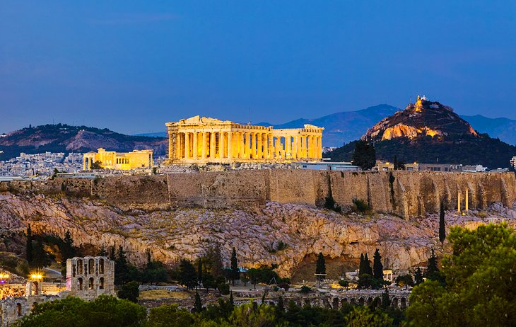

The history of Greece can be traced back to Stone Age hunters. Later came early farmers and the Minoan and Mycenaean civilizations. This was followed by a period of wars and invasions, known as the Middle Ages. Around 1100 BC, the people of the Dorians invaded from the north and spread along the west coast. In the period 500-336 BC, Greece was divided into small city-states, each of which consisted of a city with the surrounding countryside.
The ancient Greek classical and Hellenistic eras are without doubt the most beautiful times, having left behind a myriad of ideas, concepts and the basics of what we now call "Western civilization". However, the previous two millennia leading to these ancient times, as well as the following two millennia, are all part of the history of Greece after leaving an equally rich cultural imprint on the territory. Much of the Greek civilization has survived either directly or through changes to the present day.
Considered the symbol of Athens and Greece, and indeed of Western civilization, the Acropolis is a rocky mound rising in the heart of modern Athens, crowned by three magnificent temples dating from the 5th century BC. The best known and most distinctive is the Parthenon, originally made up of 58 columns supporting a roof and decorated by ornate pediments and a frieze.
Skirting the foot of the Acropolis and connecting it to the city's other major ancient attractions - the Ancient Agora , the Roman Forum, Kerameikos, and the Temple of Olympian Zeus - is a 2.5-kilometer walking path known as the Archaeological Promenade.
Samaria Gorge
On the island of Crete, the Samaria Gorge is a top attraction for lovers of the great outdoors. Measuring 16 kilometers in length and, at its narrowest point, only four meters wide, it runs from Omalos (1,250 meters) in the White Mountains down to Agia Roumeli, on the Libyan Sea.
Depending on your level of fitness, it will take five to seven hours to walk. It is steep in parts and rocky, so you should wear good hiking shoes and carry plenty of water. The gorge lies within the Samaria National Park, and is on the UNESCO tentative list. Through summer, organized tours depart from Chania and Réthymnon.
The Towns and Beaches of Crete
The massive island of Crete is one of the most popular vacation destinations in Greece. Blessed with some of the best beaches in Greece, the island draws visitors from around the world. Some of the most popular beaches on Crete range from small arcs of sand backed by restaurants and promenades to wide-open natural stretches lapped by incredibly clear waters and endless views across the sea.
But Crete is not all about beaches. It has its fair share of notable archeological sites, including the impressive Palace of Knossos, located near the pleasant city of Heraklion. The historical city of Chania and the laid-back town of Agios Nikolaos have wonderful old waterfront areas perfect for spending long afternoons on a café terrace getting lost in the views.
The civilization of ancient Greece was immensely influential in many spheres: language, politics, educational systems, philosophy, science, and the arts. It had major effects on the Roman Empire which ultimately ruled it. As Horace put it, "Captive Greece took captive her fierce conqueror and instilled her arts in rustic Latium."
The Greeks made major contributions to math and science. We owe our basic ideas about geometry and the concept of mathematical proofs to ancient Greek mathematicians such as Pythagoras, Euclid, and Archimedes. Some of the first astronomical models were developed by Ancient Greeks trying to describe planetary movement, the Earth's axis, and the heliocentric system which is a model that places the Sun at the center of the solar system. Hippocrates, another ancient Greek, is the most famous physician in antiquity. He established a medical school, wrote many medical treatises, and is because of his systematic and empirical investigation of diseases and remedies—credited with being the founder of modern medicine. The Hippocratic oath, a medical standard for doctors, is named after him.
On the island of Crete, the Samaria Gorge is a top attraction for lovers of the great outdoors. Measuring 16 kilometers in length and, at its narrowest point, only four meters wide, it runs from Omalos (1,250 meters) in the White Mountains down to Agia Roumeli, on the Libyan Sea.
The massive island of Crete is one of the most popular vacation destinations in Greece. Blessed with some of the best beaches in Greece, the island draws visitors from around the world. Some of the most popular beaches on Crete range from small arcs of sand backed by restaurants and promenades to wide-open natural stretches lapped by incredibly clear waters and endless views across the sea.